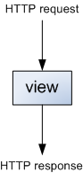
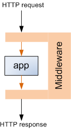

This is the second in a series of three articles.
Sessions are Django's high-level tool for keeping a persistent state for users on the server. Sessions allow to store arbitrary data per visitor, and have this data available the next time the visitor visits the site. As we'll learn in this article, sessions are still based on cookies, but cookie management is abstracted away, handling a lot of issues on the way - as sessions provide a more convenient, robust and safe way to store the data.
Example - using sessions
First, it's useful to see an easy example of using Django sessions. Here's a simple view that uses sessions to count the amount of times a user has triggered it [1].
def test_count_session(request):
if 'count' in request.session:
request.session['count'] += 1
return HttpResponse('new count=%s' % request.session['count'])
else:
request.session['count'] = 1
return HttpResponse('No count in session. Setting to 1')
If we compare this to the cookies usage example from part I, a couple of differences are apparent:
- Sessions are more uniform - a single session attribute of the request is used for both querying and modifying the session.
- While in this example we're only using an integer as the value, the session attribute acts as a dictionary, allowing string keys and almost arbitrary Python objects as values [2].
However, looking at the actual HTTP traffic for this view, we notice yet another, very important difference. Here's the cookie the view returns to the user for this particular instance of the application on my machine:
Set-Cookie:sessionid=a92d67e44a9b92d7dafca67e507985c0;
expires=Thu, 07-Jul-2011 04:16:28 GMT;
Max-Age=1209600;
Path=/
There's no count=1 (or other numeric value) here - the cookie just sets some unique sessionid. We'll see what this means shortly, but I'll just note that this is a very important feature of session management. Think about the security implications, for instance. Suppose the user gets a prize for the 10th time he triggers the view. With a simple cookie passing the count into the user's browser this would be something very easy to spoof. With a session, however, the user has no idea what the correct sessionid - in fact, no such sessionid exists yet, so the user has no real way spoofing his 10th visit [3]
Deciphering the session ID
By default, Django's session module stores sessions in the app's main DB, in table django_session with this schema:
CREATE TABLE "django_session" (
"session_key" varchar(40) NOT NULL PRIMARY KEY,
"session_data" text NOT NULL,
"expire_date" datetime NOT NULL
);
session_key is the ID placed in the cookie, and session_data contains the actual session data in encoded format. Here's how to decipher the session ID we've seen above:
from django.contrib.sessions.models import Session
#...
sess = Session.objects.get(pk='a92d67e44a9b92d7dafca67e507985c0')
print(sess.session_data)
print(sess.get_decoded())
This prints:
ZmEyNDVhNTBhMTk2ZmRjNzVlYzQ4NTFjZDk2Y2UwODc3YmVjNWVjZjqAAn1xAVUFY291bnRxAksG
cy4=
{'count': 6}
As you can see, Django stores the request.session dictionary in the DB, in an encoded manner. Django can recover it from the DB by using the session ID the user's browser returns in a cookie. All of this is done transparently by Django's session module - the application's view just has a simple access to the request.session dictionary. Let's dive into the guts of Django to understand how it manages to make this work.
Session middleware
The first layer of magic I'd like to unwrap has to deal with the session attribute of django.http.HttpRequest. How does the session information even get there, and how can the view change the session by simply modifying the attribute?
The answer is Django's middleware. To borrow a quote from the Django Book:
[...] Django’s middleware framework, which is a set of hooks into Django’s request/response processing. It’s a light, low-level “plug-in” system capable of globally altering both Django’s input and output.
We can think of middleware in the following way. The normal flow of data around the view we're coding in Django looks like this:
The view accepts a HTTP request object, does some application-specific work based on its contents and eventually returns a HTTP response object. Middleware makes this process a bit more complicated:
This is done by allowing the programmer to write "hook classes" with special methods that the middleware framework knows about [4]. These hooks can be registered in the MIDDLEWARE_CLASSES setting in settings.py. Note that the django.contrib.sessions.middleware.SessionMiddleware class is there by default. Looking at its source code, it has two middleware hooks - process_request and process_response [5].
process_request pulls the session key (ID) from a cookie. We can see that sessionid is actually a configurable name - SESSION_COOKIE_NAME, set by default in Django's global settings to sessionid. The request.session attribute is then populated to contain a "session store" object. More on this object a bit later.
process_response saves the session store object (thus making the changes the view did persistent) and attaches a cookie to the response sent to the client. To save on traffic, it does that only if the view actually modified the session, or if the SESSION_SAVE_EVERY_REQUEST setting is set.
This explains how the sessions are translated to cookies. But clearly, a lot of the logic is still hidden, implemented in the store object of sessions. Let's see how that works.
Session store
Sessions can use one of several storage "engines" (backends). This is configurable via the SESSION_ENGINE setting, which points to django.contrib.sessions.backends.db by default - the application's main database (as mentioned above in "Deciphering the session ID"). If you look at the sessions/backends directory in Django's source you'll see other available engines, but unless your needs are very special, you're probably OK with the default one.
Each storage engine exports a StorageSession class which derives from StorageBase. This common base implements most of the functionality of session stores, relying on methods from its specializations to abstract away the actual method of storing the data - whether in DB, file, in-memory cache or some other way. The DB-backed store uses Django's standard ORM, defined in module session.models.
To understand how all these classes play together, let's follow through what happens when the user tries to access request.session in a view, assuming the default DB store:
- Session middleware's process_request sets request.session to be an instance of db.SessionStore with session_key passed into the constructor.
- The constructor of SessionStore defers to the constructor of SessionBase, which stores the session key for later use.
- Note that the session isn't loaded right away from the DB. This is lazy loading - the actual data is loaded when it's actually being accessed.
- process_request is done at this point, so the HTTP request is passed into the view. Suppose we now read its count key, as in the example above.
- SessionBase implements a dict-like interface [6], and in particular __getitem__, which takes the key from a _session attribute, which in itself is a property, deferring reads to the _get_session method.
- _get_session does the actual lazy loading, using the load method.
- load is one of the methods related to the actual storage, so SessionBase doesn't implement it. Instead db.SessionStore implements it and uses the session DB model to load the value from the DB based on the key, decoding it first.
This is about it, except one small detail. How does encoding and decoding work? Let's look at encode:
def encode(self, session_dict):
"Returns the given session dictionary pickled and encoded as a string."
pickled = pickle.dumps(session_dict, pickle.HIGHEST_PROTOCOL)
hash = self._hash(pickled)
return base64.encodestring(hash + ":" + pickled)
The session dictionary is pickled. Then, a hash is computed and prepended to the pickle string. Finally the whole string is encoded in base 64, which is stored in the session_data field of the DB table.
Conclusion
In this article, we've seen how to use Django sessions, what happens on the low-level of HTTP requests and responses when sessions are being used, and how sessions are actually implemented by Django. While I didn't cover every little detail, I hope there's enough information to understand the big picture. If there's any important information you think I may have missed, please let me know.

| [1] | For the sake of this article, I'm ignoring cookie/session expiration issues. Assume they never expire. |
| [2] | By "almost arbitrary" I refer to Python objects that are pickle-able. |
| [3] | I say no "real" way because this scheme is, of course, not entirely secure - so don't bet real money on it. Depending on the exact configuration and usage of sessions by the application, by having access to the traffic from other users, the attacker can possibly spoof a session ID. |
| [4] | These middleware classes are a prime example of Python's duck typing. No need to adhere to any specified interface; no need to derive from some common base or explicitly set the hook methods. Just implement the methods you need in a class, and register that class with the framework. Python's reflection and duck typing capabilities are then used to automatically discover and use these hooks. |
| [5] | Take a moment to review the Django middleware docs to understand how to use these hooks. |
| [6] | More formally, a Python mapping type. |